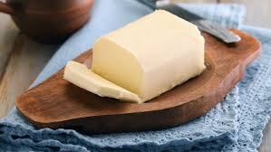

Butter

Butter is one of the most basic, but best foods humans have ever made.
Many cultures have butter as of of their staple items.
Ingrediants
- 1 Cup heavy whipping cream
- 1/2 tsp salt
- Bowl of ice cold water
- Optional choices below
- 2 TBSP Honey
- 1 tsp ground cinnamon
Instructions
- Add heavy whipping cream to mixing bowl and set on medium
- let run until solid and liquids start to seperate (~10mins)
- grab the solids, and in the ice cold bowl of water, start sqeezing out any excess fluid
- Once done with that, add the salt in
- If you are adding any of the addtional Ingrediants, do so now
Return Home